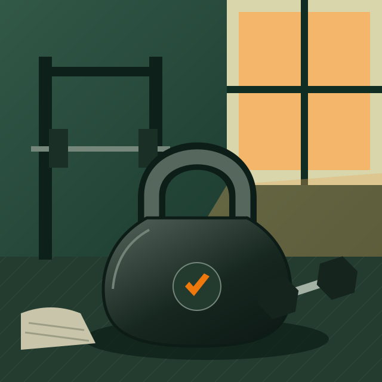

Build a stronger foundation
Explore progressive resistance training and movement fundamentals at a pace that suits your experience.
- Movement fundamentals
- Progressive resistance
- Trackable strength goals
PERSONAL TRAINING / BUILT FOR REAL LIFE
Build strength, improve confidence and make movement a sustainable part of your life. Start where you are, and work toward what matters to you.
Plan your next step →Explore training ↓
Find your starting point
Explore progressive resistance training and movement fundamentals at a pace that suits your experience.
Develop a practical routine around your current fitness level, schedule and available equipment.
Focus on realistic goals, consistency and habits that fit everyday life rather than quick fixes.
The Mad Mallard approach
Fitness should support your life, not take it over. Start with manageable steps and build a routine you can maintain.
Training knowledge
Start with a routine that fits your week. Choose manageable sessions, allow time for recovery and adjust as your confidence grows.
Learn movement patterns before increasing resistance. Use a comfortable range of motion and stop if an exercise causes pain.
Track completed sessions, how movements feel and changes in everyday function. Progress is more than a number on the scale.
General fitness education, not individualized medical or exercise advice.
No. Your current experience is a starting point, not a prerequisite.
Training options can be discussed based on what you have available.
You receive a summary of your training preferences that you can save for a future discussion. It is not a booking, and nothing is sent online.
Discuss limitations with a qualified healthcare professional before starting or changing an exercise program. Personal training is not medical treatment.
Take the first step
Create a short training inquiry to clarify your goals. This preview does not send or store your information.